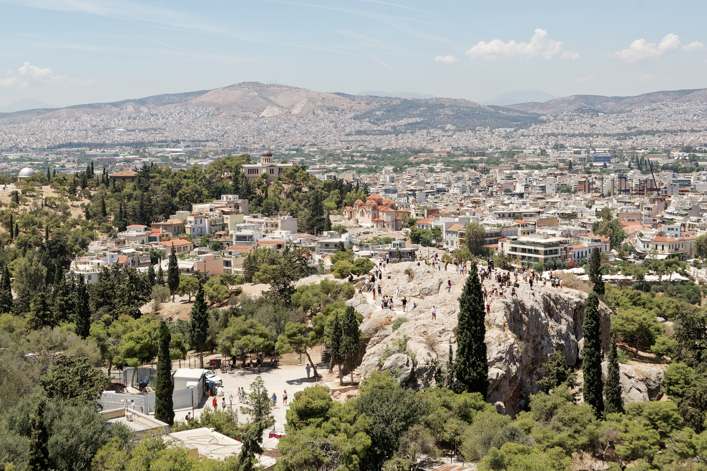

Areopagus (Mars Hill)

- Find Name
- Areopagus (Mars Hill)
- Historical Period
- Roman
- Artifact Date
- Standing rock (used as a council seat from antiquity)
- Date Discovered
- Standing monument
- Discovery Location
- Areopagus, Athens, Greece
- Current Location
- In situ, Athens
- Timeline Era
- Early Church
- Description
- The rocky outcrop northwest of the Athenian Acropolis where the council of the Areopagus sat, and where Paul stood to address the philosophers of Athens about the 'unknown god.' The bare rock, worn by centuries of feet, still rises above the city Paul walked.
- Biblical Significance
- Here the gospel met philosophy on philosophy's own ground. Paul did not denounce Athens; he quoted its poets, named its unknown god, and announced the resurrection — and the rock where he stood still preaches that the faith can face any city's questions.
- Evidence Class
- Direct
- Interpretations
- Scholars agree the Areopagus rock is the council's seat of Acts 17; the exact spot where Paul stood within the area is not marked by any inscription.
- Scripture Illuminated
- Related People
- Related Books
- Related Places
- Alternative Names
- Mars Hill
Awaiting Review Not yet checked against scholarly sources. Treat its claims as provisional until this entry is reviewed. About verification
Last reviewed: not yet reviewed